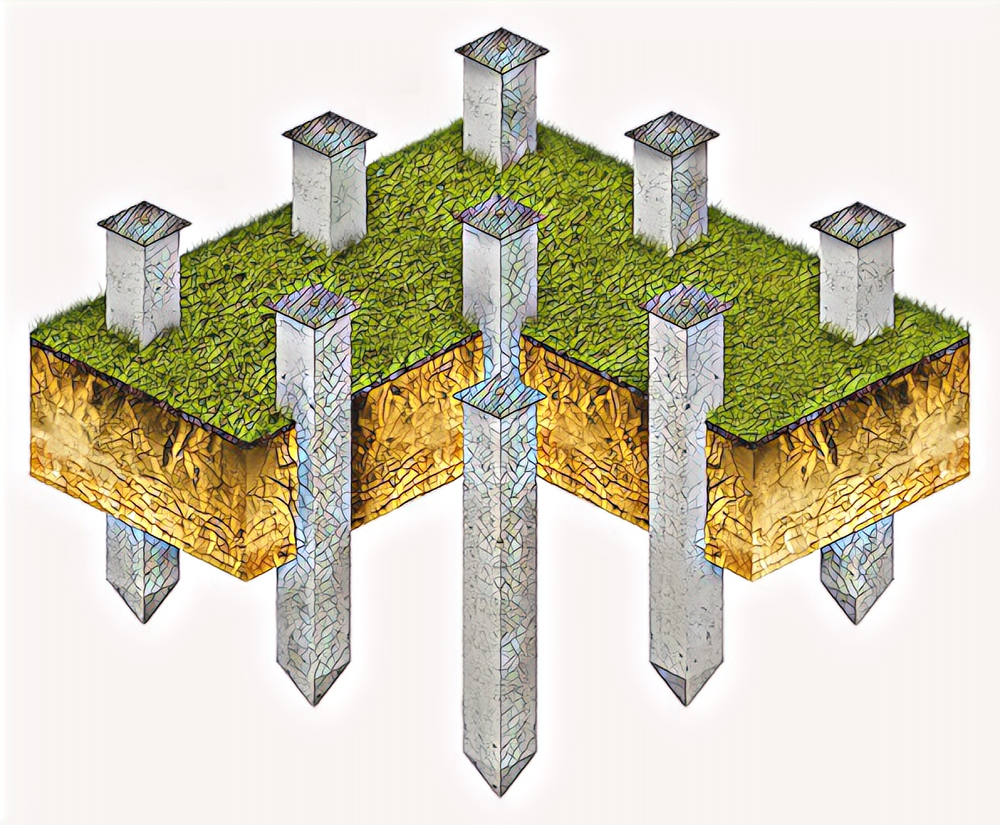

Свайный фундамент – это опорная конструкция под здание, состоящая из отдельно стоящих свай или свайного поля. Обычно их изготавливают из железобетона, но возможно использование не армированного бетона или бутобетона, что несколько уменьшает стоимость конструкции. Для повышения прочности и экономии бетона производят армирование свайного фундамента. В качестве арматуры обычно используется прутья из гладкой или профилированной стали. Фундаментные сваи обязательно устанавливают под углами здания, на пересечении внутренних несущих стен между собой и с наружными стенами. Если между обязательными сваями расстояние от 2 до 2,5 м и более, то между ними устраивают и промежуточные.
1. Забивные или вдавливаемые. Готовые погружают прямо в грунт или в лидерные (предварительно подготовленные) скважины. По материалу – бетонные, железобетонные, стальные, деревянные. По армированию: с ненапрягаемой арматурой, установленной продольно и поперечными дистанцирующими отрезками арматуры; с предварительно напрягаемой продольной прутковой или канатной арматурой с поперечной арматурой или без нее. По конфигурации сечения: поперечного – прямоугольные, квадратные, круглые, двутавровые и тавровые, круглые или квадратные с круглой полостью. продольного – цилиндрические, призматические и с боковыми наклонными гранями – трапецеидальными, ромбовидными, пирамидальными; по конструкции – цельные и составные; по виду нижнего конца – с плоским концом, с заостренным, с объемным уширенным – булавовидным, полые с открытым или закрытым окончанием и с камуфлетными пятами – со взрывными полостями.
2. Железобетонные сваи-оболочки, погружаемые с полной или частичной выемкой грунта и не заполняемые бетоном. Могут быть и бетонируемые.
3. Набивные бетонные и железобетонные. Грунт отжимается в стороны, свая бетонируется.
4. Буровые бетонные и железобетонные. В пробуренную скважину: - на растворе устанавливают готовые элементы; - заливают бетон; - устанавливают армирующий каркас и заливают бетон.
5. Винтовые. Стальная труба с винтом на конце.
6. Буровинтовые. Железобетонное изделие с винтом на конце вкручивается в грунт.
